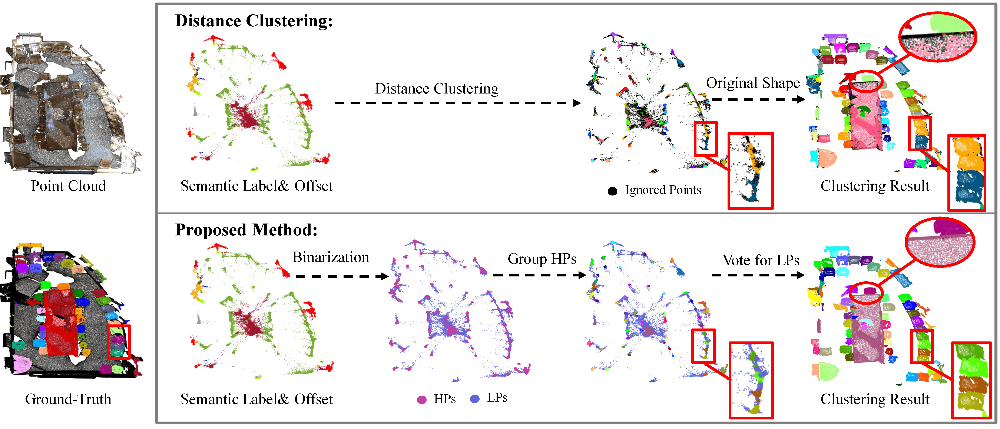
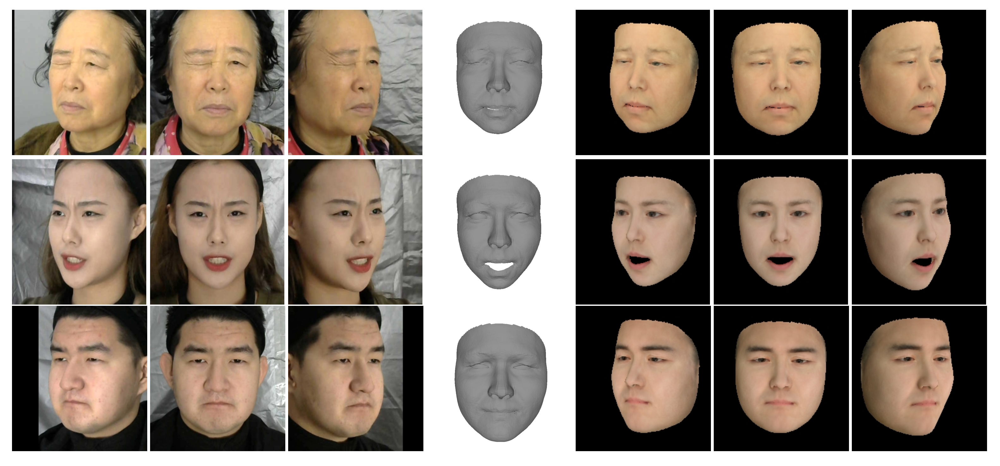
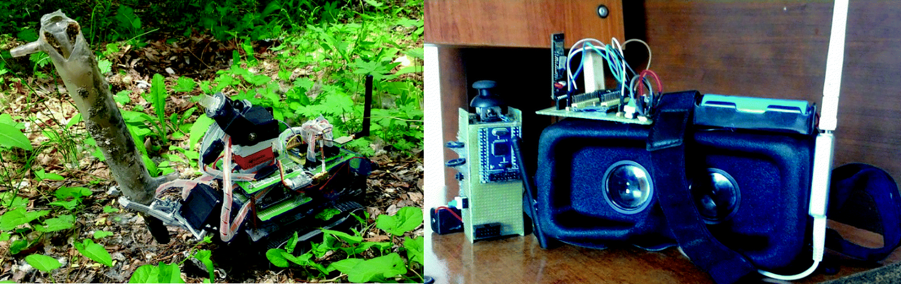
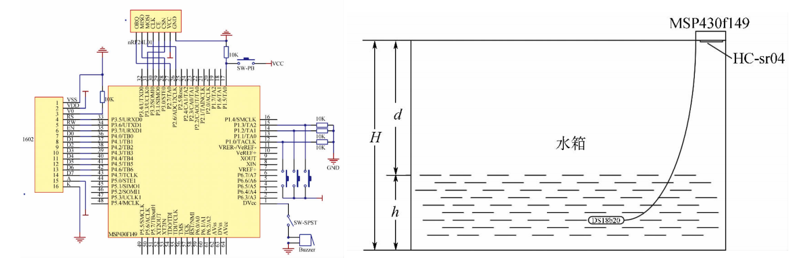
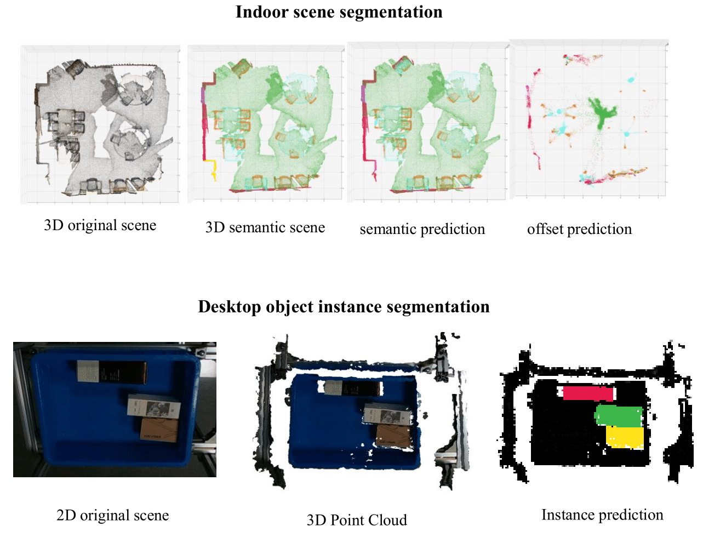
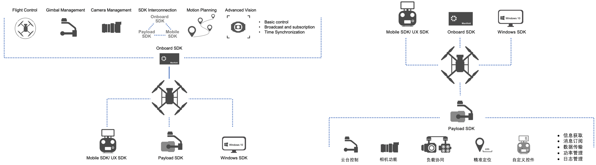

I am a research fellow in machine learning in Duke (Kunshan) University, supervised by Prof.
Huang, Kaizhu.
Before that I received my Bachelor’s degree in Electronic Information Science and Technology from
Heilongjiang University in June 2018 and my Master’s degree in MRes Pattern Recognition and Intelligent
Systems from Liverpool University in March 2022. Previously, I worked at Da-Jiang Innovations (DJI) in
Shenzhen from July 2018 to July 2020 as an Engineer.
My research interests include: 3D Vision, Machine Learning, and Robot,.
[ Updating! ]
[Sep. 2022] I got the 1st place in ScanNetV2 3D instance segmentation challenge on mAP metric.
[Aug. 2022] Research Fellow in Machine Learning in Duke (Kunshan) University.
[Aug. 2022]I got my master of research degree with distinction from Liverpool University.
[Aug. 2018]
I started to work as a SDK engineer in DJI .
[Aug. 2018]
I got my bachelor degree from Heilongjiang University.
[ Education ]
Oct. 2020 - Mar. 2022
University of Liverpool
Pattern Recognition and Intelligent System
Entry Scholarship
Master of Research (Distinction)
Sep. 2014 - Jun. 2018
Heilongjiang University
Electronic Information Science and Technology
Bachelor (GPA: 90.36/100)
[ Work Experience ]
Jul. 2022 - Now
DKU (Kunshan) Research Fellow
Research on 3D point cloud
Jul. 2018 - Jul. 2020
DJI SDK Engineer
C/C++ programming based on Linux and ROS platform
Promoted to intermediate engineer
[ Contributing ]

Divide and Conquer: 3D Point Cloud Instance Segmentation With Point-Wise Binarization W. Zhao, Y. Yan, C. Yang, J. Ye, X. Yang, K. Huang
[ Paper] (Submitted to CVPR2023)

From 2D images to 3D model: Weakly Supervised Multi-View Face Reconstruction with Deep Fusion W. Zhao, C. Yang, J. Ye, Y. Yan, X. Yang, K. Huang
[ Paper] (Submitted to Pattern Recognition)
[ Published ](Undergraduate period)

Design and Implementation of Survey Vehicle Based on VR (Oral) Weiguang Zhao, Peidong Zhuang
Machine Learning and Intelligent Communications , 2017
[ Paper] [ Code][ Oral]

Design of wireless monitoring system for solar water heater based on MSP430 Weiguang Zhao, Yong Liu
Journal of Engineering of Heilongjiang University , 2017
[ Paper] [ Code]
[ Research on Intelligent Algorithm of Target Detection and Segmentation for High-density 3D Point Cloud ]
Grade: Key R&D Program of Jiangsu Province
My mentor, Professor Huang, Kaizhu, is the project leader.
The project goal is to provide high-precision algorithms for indoor navigation and robotic grasping. In the project, I am mainly responsible
for implementing the 3D point cloud instance segmentation algorithm. I used python and pytorch to build an algorithm model,
and utilize CUDA and C++ to accelerate point cloud clustering. At present, we has made preliminary progress. And, I am writing
conference papers and patents about this project.

[ From 2D images to 3D model: Weakly Supervised Multi-View Face Reconstruction ]
My mentor, Professor Huang, Kaizhu, is the project leader. I am mainly
responsible for researching reconstruction algorithms and program implementation. In this project, we achieved SOTA on the
PixelFace dataset. At present, the papers and patents have been drafted. The paper has been submitted to AAAI2022. It has passed
the first round of review, and is in the second round of review.
Since 2018, I have joined DJI (the world's largest civilian drone company), as an SDK engineer, mainly responsible
for DJI SDK demo, ecological applications, enterprise solutions, etc. In our work, I used TX2, STM32, HiSilicon
and other hardware platforms for development. The main programming language used in my work is C/C++. The software
frameworks I commonly adopted include: Linux, ROS, freeRTOS.
Among the DJI SDK, I am mainly responsible for OSDK and
PSDK. The full name of OSDK is the Onboard SDK. Through this SDK, developers can add
control loads on DJI drones, such as NVIDIA TX2, Raspberry Pi, to control DJI drones to achieve autonomous flight without remote control.
The full name of PSDK is Payload SDK. Through PSDK, developers can load their own developed lidars, cameras, megaphones and other loads to
the gimbal ports of DJI industrial drones, and use DJI's official APP to control or obtain loads information. I participate in the joint
debugging of many third-party loads. The currently released loads are as follows:
third-party loads .
My performance has always been at the forefront of the department, and successfully promoted to a mid-level engineer. In July 2020,
I resigned from DJI and applied for a joint project between Xi’an Jiaotong University and the University of Liverpool to study
for a master’s degree.

[ Design and Implementation of Survey Vehicle Based on VR ]
Grade: National Undergraduate Innovation Training Program
Position: Project Leader
In this project, I acted as the project leader, responsible for project design, program writing, and project coordination. The content of
the project is to design a survey robot that can replace the large survey equipment and the traditional industrial camera monitoring mode
and present the true appearance of the survey environment in a simpler way. The whole design is divided into three parts: survey car body,
VR (Virtual Reality) display system, self-made grip remote control. This part of the code is based on MSP430 and C language, using IIC, SPI,
serial port and other communication technologies.
[ Attitude Flight Control of Quadrotor UAV ]
Grade: Heilongjiang University Undergraduate Innovation Training Program
Position: Project Leader
In this project, I acted as the project leader, responsible for project design, program writing. I utilized the time of winter vacation to study
the principle of quadrotor and PID algorithm in the laboratory. In the production process, I did not use the open-source flight controller. This
part of the code is implemented based on Arduino and C language.
[ Honorary title ]
Merit Student of Heilongjiang Province
Merit Student of Heilongjiang University (Every academic year)
Model Student of Academic Records (1/1000)
The student leader of Heilongjiang university Electronic Innovation Lab （1/60）
The student membership of China Institute of Electronic
[ Competition ]
ScanNet Benchmark Challenge on 3D Instance Segmentation (mAP rank: 1/50)
CVPR 2021 PIC Challenge: 3D Face Reconstruction From Multiple 2D Images (rank: 14/247)
Second Prize of Heilongjiang Division of National Electronic Design Competition（leader）
Second Prize of Heilongjiang Division of National College Challenge Cup Competition（leader）
Third Prize of Heilongjiang Division of National Mathematical Modeling Competition（member）
First Prize of Heilongjiang University C Language Programming Competition
And more than 10 school-level competition rewards
[ Scholarship ]
Entry Scholarship for MRes of liverpool University (XJTU cooperation)
National Encouragement scholarship (Every academic year)
First-class comprehensive scholarship of Heilongjiang University (Every academic year)